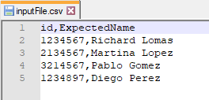

GXtest provides a procedure and SDTs to allow read test data from a CSV file. The procedure is called ReadCSV and it will be explained next.
Goal: allow to read test data in runtime and from outside the KB, enabling to change testing data without having to modify any object in the KB.
Parameters:
Example of use:

&DataPool = ReadCSV("inputFile.csv", ',', true)
For &Row in &DataPool.Rows
// use &Row data to call the object under test and perform assertions
&id = GetIntegerValueFromRow(&DataPool, &Row, "id")
&expectedName = GetValueFromRow(&DataPool, &Row, "ExpectedName")
&name = getName(&id)
AssertStringEquals(&expectedName, &name, "Assert name is retrieved correctly")
endfor
As you might have noted in the previous example, there are some functions and SDTs we used to convert string values to some specific types of values, like integer (numeric), and to store the data read from the CSV file. Those functions are also included inside the GXtest module and are listed below:
The input parameters of these methods are the same:
The last parameter is an output parameter and its type is different for each function.
Regarding the SDTs there are two of them: DataPool and DataPoolRow
DataPool object is comprised of a collection of headers in the order they were defined in the CSV file and a list of DataPoolRows, containing the information of each line of the CSV file.
| Backlinks | |
| Toc:Automated Testing | Changelog GXtest |